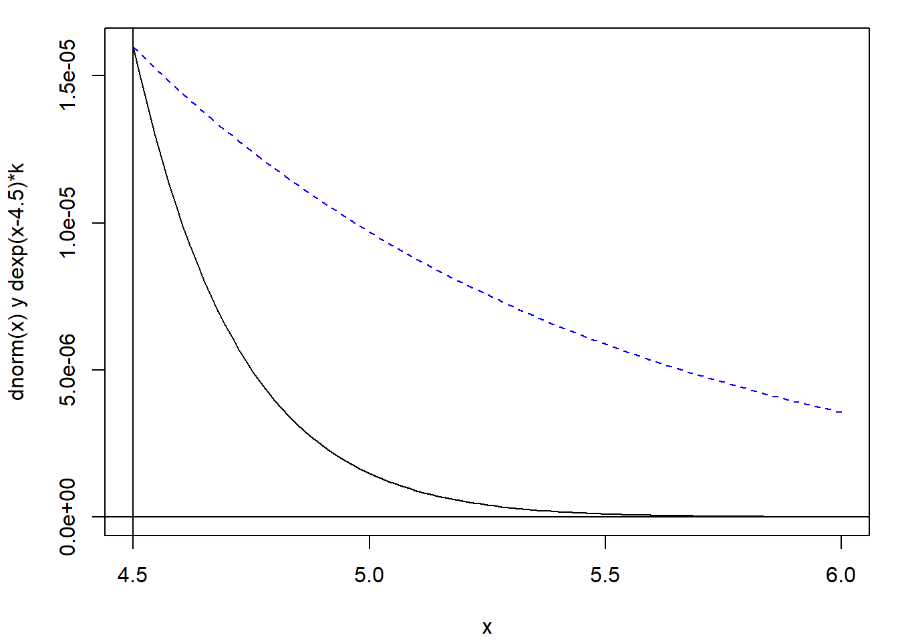
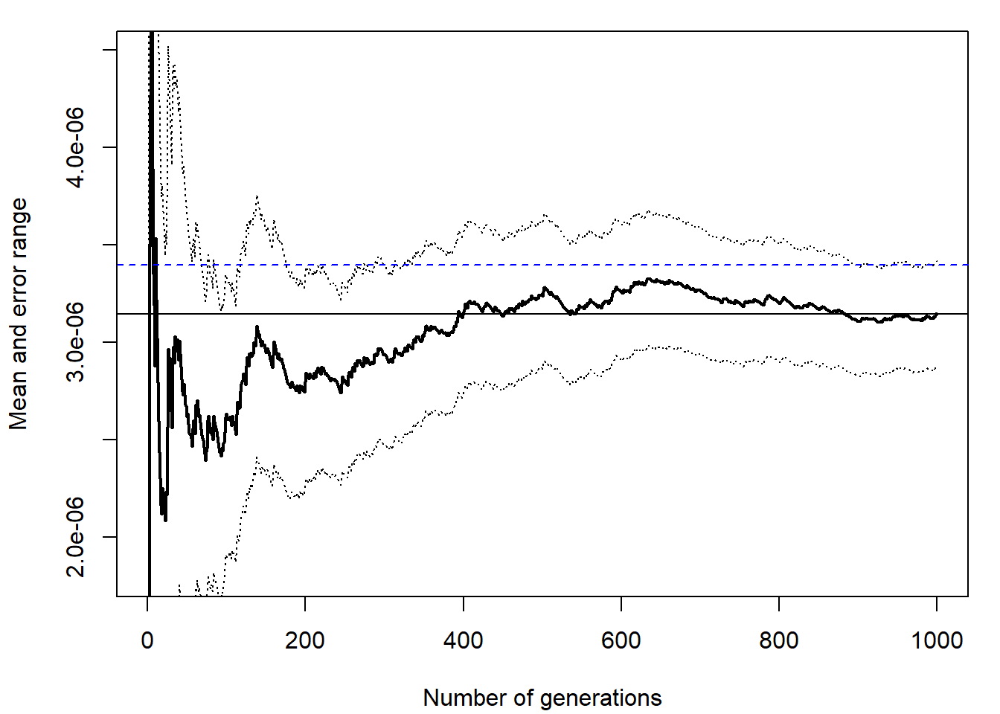
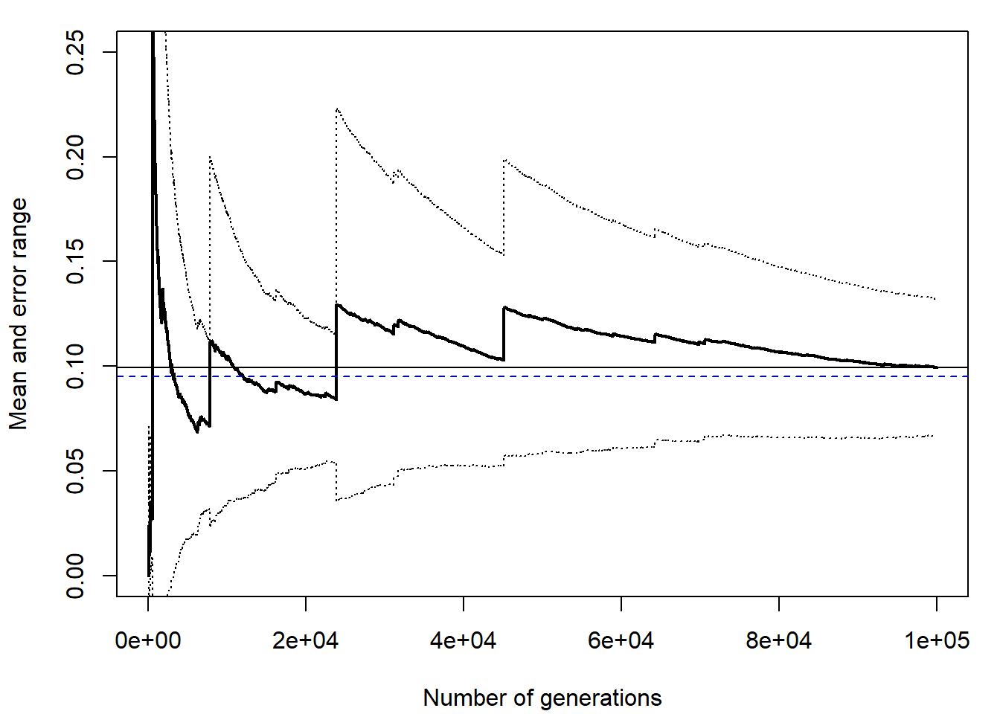
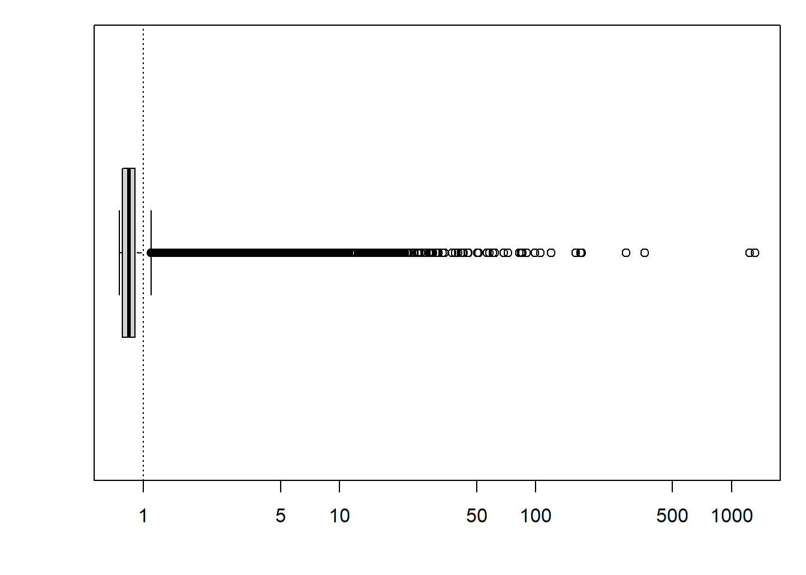
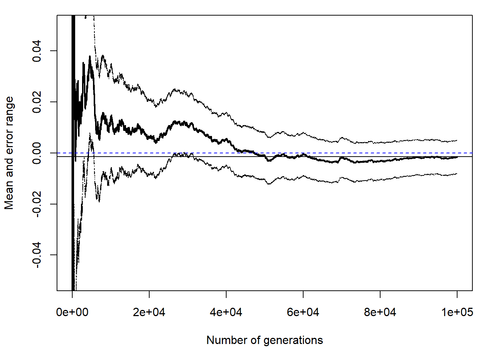
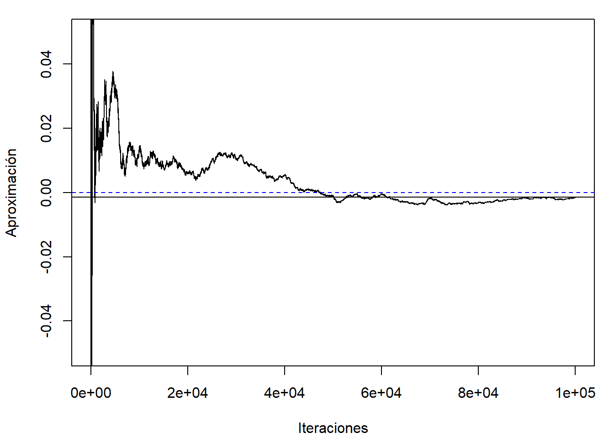
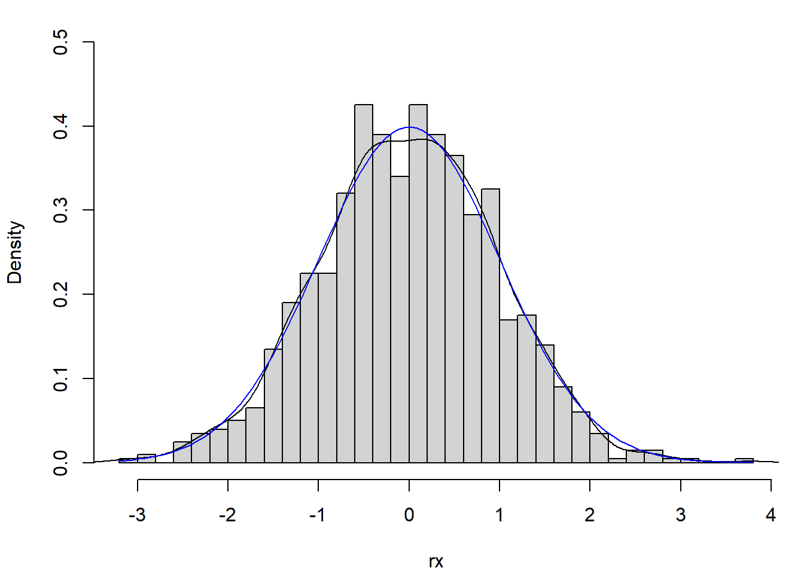

7.2 Muestreo por importancia
Para aproximar la integral: \[\theta = E\left( h\left( X\right) \right) = \int h\left( x\right) f(x)dx,\] puede ser preferible generar observaciones de una densidad \(g\) que tenga una forma similar al producto \(|h(x)|f(x)\) (Marshall, 1956).
Si \(Y\sim g\), podemos reescribir la integral como el valor esperado de una transformación de esta variable: \[\theta = \int h\left( x\right) f(x)dx = \int \frac{h\left( x\right) f(x)}{g(x)}g(x)dx = E\left( q\left( Y\right) \right).\] siendo \(q\left( x\right) = \frac{h\left( x\right) f(x)}{g(x)}\).
Entonces, a partir de \(y_1,y_2,\ldots ,y_n\) i.i.d. \(Y\sim g\), obtendríamos como aproximación: \[\hat{\theta}_{g} = \frac{1}{n}\sum\limits_{i=1}^nq\left( y_i\right) = \frac{1}{n}\sum\limits_{i=1}^nw(y_i)h\left( y_i\right)\] con \(w(y) = \frac{f(y)}{g(y)}\).
En este caso \(Var(\hat{\theta}_{g}) = Var\left( q\left( Y\right) \right) /n\), pudiendo reducirse significativamente respecto al método clásico si: \[g(x)\underset{aprox.}{\propto } \left\vert h(x) \right\vert f(x),\] ya que en ese caso \(\left\vert q(x) \right\vert\) sería aproximadamente constante (puede demostrarse fácilmente que la varianza es mínima si esa relación es exacta).
Para garantizar la convergencia de la aproximación por simulación, la varianza del estimador \(\hat{\theta}_{g}\) debería ser finita, i.e.: \[E\left( q^2\left( Y\right) \right) = \int \frac{h^2\left( x\right)f^2(x)}{g(x)}dx = E\left( h^2\left( X\right) \frac{f(X)}{g(X)}\right) < \infty.\] La idea básica es que si la densidad \(g\) tiene colas más pesadas que la densidad \(f\) con mayor facilidad puede dar lugar a “simulaciones” con varianza finita (podría emplearse en casos en los que no existe \(E \left( h^2 \left( X \right) \right)\); ver Sección 3.1).
La distribución de los pesos \(w(y_i)\) debería ser homogénea para evitar datos influyentes (que introducirían inestabilidad en la aproximación).
Ejemplo 7.3
Podríamos aproximar la integral del Ejemplo 7.2 anterior empleando muestreo por importancia considerando como densidad auxiliar una exponencial de parámetro \(\lambda=1\) truncada en \(t\):
\[g(x) = \lambda e^{-\lambda (x - t)}\text{, }x>t,\]
(podemos emplear dexp(y - t) para evaluar esta densidad y rexp(n) + t para generar valores).
En primer lugar comparamos \(h(x)f(x)\) con la densidad auxiliar reescalada, \(g(x)f(4.5)\), para comprobar si es una buena elección:
curve(dnorm(x), 4.5, 6, ylab = "dnorm(x) y dexp(x-4.5)*k")
abline(v = 4.5)
abline(h = 0)
escala <- dnorm(4.5) # Reescalado para comparación...
curve(dexp(x - 4.5) * escala, add = TRUE, lty = 2, col = "blue") 
Figura 7.4: Objetivo a integrar (densidad objetivo truncada) y densidad auxiliar reescalada.
Generamos valores de la densidad auxiliar y calculamos los pesos:
set.seed(1)
nsim <- 10^3
y <- rexp(nsim) + 4.5 # Y ~ g
w <- dnorm(y)/dexp(y - 4.5)La aproximación por simulación sería mean(w * h(y)):
h <- function(x) x > 4.5
mean(w*h(y))## [1] 3.1448e-06# En este caso no sería necesario definir h
# h(x) = 1 si x > 4.5 => h(y) = 1
# mean(w)
pnorm(-4.5) # valor teórico## [1] 3.3977e-06Podemos representamos gráficamente la aproximación en función del número de simulaciones (cumsum(w*h(y))/1:nsim) y obtener medidas de la precisión, como el error estándar de la aproximación (sqrt(var(w * h(y))/nsim)), pero puede resultar más cómodo emplear conv.plot(w*h(y)) (ver Figura 7.5):
# plot(cumsum(w)/1:nsim, type = "l", ylab = "Aproximación", xlab = "Iteraciones")
# sqrt(var(w)/nsim) # sd(w*h(y))/sqrt(nsim) # Error estándar
res <- conv.plot(w)
abline(h = pnorm(-4.5), lty = 2, col = "blue")
Figura 7.5: Convergencia de la aproximación de la integral mediante muestreo por importancia.
res## $approx
## [1] 3.1448e-06
##
## $max.error
## [1] 2.6874e-07Ejemplo 7.4 (muestreo por importancia con mala densidad auxiliar)
Supongamos que se pretende aproximar \(P\left(2<X<6\right)\) siendo \(X\sim Cauchy(0,1)\) empleando muestreo por importancia y considerando como densidad auxiliar la normal estándar \(Y\sim \mathcal{N}(0,1)\). Representaremos gráficamente la aproximación y estudiaremos los pesos \(w(y_i)\).
Nota: En este caso van a aparecer problemas (la densidad auxiliar debería tener colas más pesadas que la densidad objetivo; sería adecuado si intercambiáramos las distribuciones objetivo y auxiliar, como en el Ejemplo 7.6 siguiente).
Se trata de aproximar pcauchy(6) - pcauchy(2),
i.e. f(x) = dcauchy(x) y h(x) = (x > 2) * (x < 6),
empleando muestreo por importancia con g(y) = dnorm(y).
nsim <- 10^5
set.seed(4321)
y <- rnorm(nsim)
w <- dcauchy(y)/dnorm(y) # w <- w/mean(w) si alguna es una cuasidensidadLa aproximación por simulación es mean(w * h(y)):
mean(w * (y > 2) * (y < 6)) ## [1] 0.099293pcauchy(6) - pcauchy(2) # Valor teórico (normalmente desconocido)## [1] 0.095015Podríamos pensar que se trata de una buena aproximación, pero si se estudia la convergencia:
# plot(cumsum(w * (y > 2) * (y < 6))/1:nsim, type = "l",
# ylab = "Aproximación", xlab = "Iteraciones")
conv.plot(w * (y > 2) * (y < 6), ylim = c(0, 0.25))
abline(h = pcauchy(6) - pcauchy(2), lty = 2, col = "blue")
Figura 7.6: Gráfico de convergencia de la aproximación mediante muestreo por importancia con mala densidad auxiliar.
observaríamos que hay problemas de varianza finita. Esto indicaría una mala elección de la densidad auxiliar, que debería tener colas más pesadas que la densidad objetivo, al contrario de lo que ocurre en este caso.
La recomendación sería realizar también un análisis descriptivo de los pesos que, como ya se comentó, deberían tener una distribución homogénea. Por ejemplo, si los reescalamos de forma que su suma sea igual al número de valores generados, deberían tomar valores en torno a uno (su media sería uno):
boxplot(w/mean(w), horizontal = TRUE, log = "x") # boxplot(nsim * w/sum(w))
abline(v = 1, lty = 3)
Figura 7.7: Gráfico de cajas de los pesos del muestreo por importancia reescalados (de forma que su media es 1).
En este caso podemos observar que algunos valores tienen un peso extremadamente grande en la aproximación por simulación (algunos incluso más de 1000 veces del que deberían), causando las inestabilidades que se observaron en el gráfico de convergencia (si se cambia la semilla o se reduce el número de simulaciones podríamos obtener una aproximación muy mala de la integral).
7.2.1 Otros métodos de muestreo por importancia
En el procedimiento anterior de muestreo por importancia se tiene que \(E \left( w(Y) \right) = 1\) sin embargo los pesos \(w(y_i)\) no tienen necesariamente media uno (el estimador no es equivariante frente a la adición de una constante). Por este motivo se han propuesto distintas alternativas para normalizar los pesos (Hesterberg, 1995).
Una de las aproximaciones más utilizadas es: \[\tilde{\theta}_{g} = \frac{\sum\limits_{i=1}^n w(y_i) h\left( y_i\right) }{ \sum\limits_{i=1}^n w(y_i)} = \frac{\hat{\theta}_{g}}{\overline w},\] que equivale a reescalar los pesos en el estimador original, empleando \(\tilde w(y_i) = w(y_i)\left/ \frac{1}{n}\sum\nolimits_{i=1}^n w(y_i) \right.\) en su lugar. Aunque en general no es insesgado, puede ser más eficiente si \(w(Y)\) y \(w(Y)h(Y)\) están altamente correlacionadas (e.g. Liu, 2004, p. 35).
Una ventaja del estimador \(\tilde{\theta}_{g}\) es que no depende de la constante normalizadora y puede ser empleado en el caso de una cuasi-densidad \(f^{\ast}\) (un pequeño inconveniente es que resulta algo más complicado aproximar su error estándar, al ser un cociente de variables aleatorias).
Ejemplo 7.5
Supongamos que se pretende aproximar la media de una normal estándar, \(E(X)\) con \(X\sim \mathcal{N}(0,1)\), empleando ambos métodos de muestreo por importancia y considerando como densidad auxiliar una distribución de Cauchy, \(Y\sim Cauchy(0,1)\).
Nota: En este caso f(y) = dnorm(y) y g(y) = dcauchy(y), al revés que en el Ejemplo 7.4 anterior.
Generamos las simulaciones de la densidad auxiliar y calculamos los pesos:
nsim <- 10^5
set.seed(1)
y <- rcauchy(nsim)
w <- dnorm(y)/dcauchy(y)
# w <- w/mean(w) si alguna es una cuasidensidad y coincidirían ambas aproximacionesCalculamos la aproximación con el método original:
# h(x) <- function(x) x
res <- conv.plot(w*y, ylim = c(-0.05, 0.05))
abline(h = 0, lty = 2, col = "blue")
res## $approx
## [1] -0.0014121
##
## $max.error
## [1] 0.0065108Con los pesos normalizados la aproximación por simulación sería sum(w * h(y))/sum(w):
res <- sum(w*y)/sum(w)
res## [1] -0.00141Para el análisis de la convergencia se emplearía cumsum(w * h(y))/cumsum(w):
plot(cumsum(w*y)/cumsum(w), type="l", ylab="Aproximación",
xlab="Iteraciones", ylim = c(-0.05, 0.05))
abline(h = res)
# conv.plot(w*y/mean(w), ylim = c(-0.05, 0.05))
# Cuidado con la aproximación del error estándar
abline(h = 0, lty = 2, col = "blue")
Nota: Si \(f\) o \(g\) fuesen cuasidensidades y se pidiese aproximar la integral, solo podríamos emplear esta última aproximación.
7.2.2 Remuestreo (del muestreo) por importancia
El muestreo por importancia tiene cierta similitud con el método de simulación por aceptación/rechazo, aunque en este caso no se rechaza ninguna generación de la densidad auxiliar y se pueden evitar con mayor facilidad los problemas de eficiencia que aparecen habitualmente con el método de aceptación/rechazo cuando el número de dimensiones es grande (ver Ejemplo 6.3 en Sección 6.2).
Adicionalmente, al mismo tiempo que se aproxima la integral, empleando \(\hat{\theta}_{g}\) o una alternativa \(\tilde{\theta}_{g}\), podemos generar observaciones con distribución aproximadamente igual a la de la densidad objetivo. Puede verse que con un muestreo de \(\left\{y_1, y_2, \ldots, y_n \right\}\) ponderado por \(w(y_i)\) (con probabilidades \(p_i=w(y_i)\left/ \sum\nolimits_{i=1}^n w(y_i) \right.\) ) se obtiene una simulación aproximada de \(f\) (Sample importance resampling, Rubin, 1987). No obstante, la recomendación sería generar un número de valores \(m\) mucho menor que el número de simulaciones \(n\) de la densidad auxiliar, especialmente si la distribución de los pesos no es homogénea (en caso contrario aumentaría la probabilidad de que observaciones con pesos altos aparezcan repetidas).
El resultado anterior es también válido para una cuasi-densidad \(f^{\ast}\) (\(f(x) = f^{\ast}(x)/c \propto f^{\ast}(x)\)), ya que no depende de la constante normalizadora \(c\). Además, podríamos estimar esta constante a partir de los pesos del muestreo por importancia: \[\hat c = \frac{1}{n}\sum_{i=1}^n w^{\ast}(y_i),\] siendo \(w^{\ast}(y_i) = f^{\ast}(y_i) \left/ g(y_i) \right.\).
Ejemplo 7.6 (simulación de normal estándar a partir de Cauchy; Sampling Importance Resampling)
Generamos 1000 simulaciones con distribución aproximadamente \(\mathcal{N}(0,1)\) (densidad objetivo) mediante remuestreo del muestreo por importancia de los \(10^{5}\) valores de la distribución \(Cauchy(0,1)\) (densidad auxiliar) obtenidos en el Ejemplo 7.5 anterior:
nsim2 <- 1000
set.seed(1)
# Sampling importance resampling
rx <- sample(y, nsim2, replace = TRUE, prob = w/sum(w))
# Comparación distribuciones
hist(rx, freq = FALSE, breaks = "FD", main = "", ylim = c(0, 0.5))
lines(density(rx))
curve(dnorm, col = "blue", add = TRUE)
Figura 7.8: Distribución de los valores generados mediante remuestreo por importancia y densidad objetivo.
Ejercicio 7.1 (propuesto)
Consideramos una variable aleatoria con densidad: \[f(x)\propto e^{-x}\cos^{2}(x),\text{ si }x>0.\]
Aproximar mediante integración Monte Carlo la media de esta distribución (\(h(x)=x\)) empleando muestreo de importancia con distribución auxiliar una exponencial de parámetro \(\lambda=1\) a partir de 10000 simulaciones (OJO: se conoce la cuasi-densidad de la variable aleatoria de interés, emplear la aproximación descrita en apuntes).
Generar 500 simulaciones (aprox.) de la distribución de interés mediante remuestreo del muestreo por importancia.
NOTA: Como se trata de una cuasi-densidad, \(f^{\ast}(x) = e^{-x}\cos^{2}(x)\), habrá que utilizar \(\tilde{\theta}_{g}\) mostrado 7.2.1.
En el último apartado, para comprobar que los valores generados proceden de la distribución objetivo, si representamos la cuasidensidad junto con el histograma (en escala de densidades, freq = FALSE), hay que tener en cuenta que faltaría dividir la cuasidensidad por una constante normalizadora para poder compararlos directamente.
Si no se reescala la cuasidensidad, podríamos comprobar si la forma es similar (si la distribución de los valores generados es proporcional a la cuasidensidad, con mayor concentración donde la cuasidensidad se aleja de 0).
En este caso, como \(g\) es una densidad, podríamos estimar la constante normalizadora (en este caso \(c = 3/5\)) a partir de la media de los pesos del muestreo por importancia (c.approx <- mean(w); ver Sección 7.2.2).
LA MATERIA EVALUABLE EN EL CURSO 2025/2026 TERMINA AQUÍ